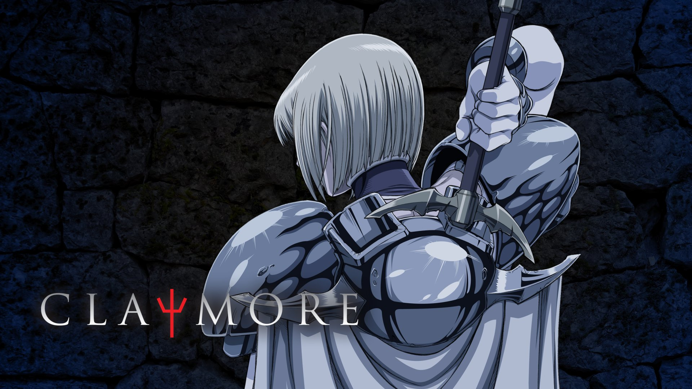

One of the worse things about the anime industry is how so many good shows get discontinued. Anime consumers are often left hanging with cliffhangers or incomplete stories because the anime either doesn't get a second season or the manga it was based on gets cancelled. Here are some anime that I think deserve to be brought back for another season or to be otherwise properly concluded. To be clear, this list is not about manga, but rather anime that were either cut short or never got a complete adaptation.

Claymore is a dark fantasy anime that follows the story of a young girl named Clare who is a Claymore, a powerful warrior who fights against monsters called Yoma. The series is known for its intense action sequences and mature themes. Despite its popularity, the series was cut short after only one season, leaving many fans wanting more. The story of Clare's journey of revenge and closure is one that I and many others want to see concluded. The worset part about the cancellation of this anime is that it left off at a major cliffhanger that made it clear that there was more story to tell. Finding out this series would not be continued was a huge disappointment.
Top